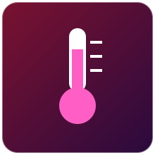

Sensores responsáveis por medir grandezas térmicas e a quantidade de vapor d'água no ar, essenciais para climatização, estufas, câmaras frias e monitoramento ambiental.
Nenhum sensor encontrado com esse filtro.

O DHT11 é um sensor digital combinado de temperatura e umidade relativa do ar, muito usado em projetos introdutórios de IoT por seu baixo custo e facilidade de uso.
Internamente possui um termistor NTC para medir temperatura e um sensor capacitivo de umidade. Um microcontrolador embutido no próprio módulo faz a leitura analógica desses elementos e envia o resultado já convertido em um protocolo digital de um único fio (single-wire).
| Tensão de alimentação | 3V a 5,5V |
|---|---|
| Faixa de temperatura | 0°C a 50°C (±2°C) |
| Faixa de umidade | 20% a 90% UR (±5%) |
| Taxa de amostragem | Aprox. 1 leitura por segundo |
Digital (protocolo proprietário de 1 fio)
Conectado a um pino digital do Arduino, o DHT11 permite montar uma estação de monitoramento ambiental que envia os dados por Wi-Fi (via ESP32) para um painel de IoT em nuvem.
Aosong (fabricante original), Módulos compatíveis: Keyestudio, HiLetgo
O DHT22 (também chamado AM2302) é a versão mais precisa e com maior faixa de medição do que o DHT11, sendo indicado quando o projeto exige maior confiabilidade nos dados.
Assim como o DHT11, combina um sensor capacitivo de umidade e um termistor de precisão, mas com componentes de melhor qualidade e um circuito de conversão mais estável, resultando em leituras mais exatas e em uma faixa de operação mais ampla.
| Tensão de alimentação | 3,3V a 6V |
|---|---|
| Faixa de temperatura | -40°C a 80°C (±0,5°C) |
| Faixa de umidade | 0% a 100% UR (±2%) |
| Taxa de amostragem | Aprox. 1 leitura a cada 2 segundos |
Digital (protocolo proprietário de 1 fio)
Em uma câmara fria conectada a um Raspberry Pi, o DHT22 monitora continuamente a umidade para acionar um desumidificador automaticamente quando o valor ultrapassa o limite configurado.
Aosong (fabricante original), Módulos compatíveis: Adafruit, DFRobot
O LM35 é um sensor analógico de temperatura de precisão cuja tensão de saída é linearmente proporcional à temperatura em graus Celsius, sem necessidade de calibração externa.
É um circuito integrado que gera uma tensão de saída de 10 mV para cada 1°C de temperatura. Basta ler essa tensão com uma entrada analógica (ADC) e aplicar uma conversão matemática simples para obter a temperatura em graus Celsius.
| Tensão de alimentação | 4V a 30V |
|---|---|
| Faixa de temperatura | -55°C a 150°C |
| Sensibilidade | 10 mV/°C |
| Precisão típica | ±0,5°C a 25°C |
Analógico
Ligado a uma entrada analógica do Arduino, o LM35 permite calcular a temperatura com a fórmula temperatura = (leitura_ADC * 5.0 / 1023.0) * 100, exibindo o valor em um display ou enviando via serial.
Texas Instruments (fabricante original do CI), Módulos com o CI LM35: diversos fabricantes de placas de desenvolvimento
O DS18B20 é um sensor digital de temperatura à prova d'água (em sua versão encapsulada), muito usado quando é preciso medir a temperatura de líquidos ou em ambientes externos.
Utiliza o protocolo digital 1-Wire, permitindo que vários sensores DS18B20 compartilhem o mesmo pino do microcontrolador, cada um identificado por um endereço único de 64 bits gravado de fábrica.
| Tensão de alimentação | 3V a 5,5V |
|---|---|
| Faixa de temperatura | -55°C a 125°C (±0,5°C entre -10°C e 85°C) |
| Resolução configurável | 9 a 12 bits |
| Comunicação | Protocolo 1-Wire (Dallas/Maxim) |
Digital (1-Wire)
Vários sensores DS18B20 distribuídos ao longo de uma tubulação, todos ligados ao mesmo pino digital do Arduino, permitem mapear o perfil de temperatura da tubulação inteira usando apenas um fio de dados.
Maxim Integrated / Analog Devices (fabricante original), Módulos à prova d'água: diversos fabricantes (ex.: DFRobot, HiLetgo)